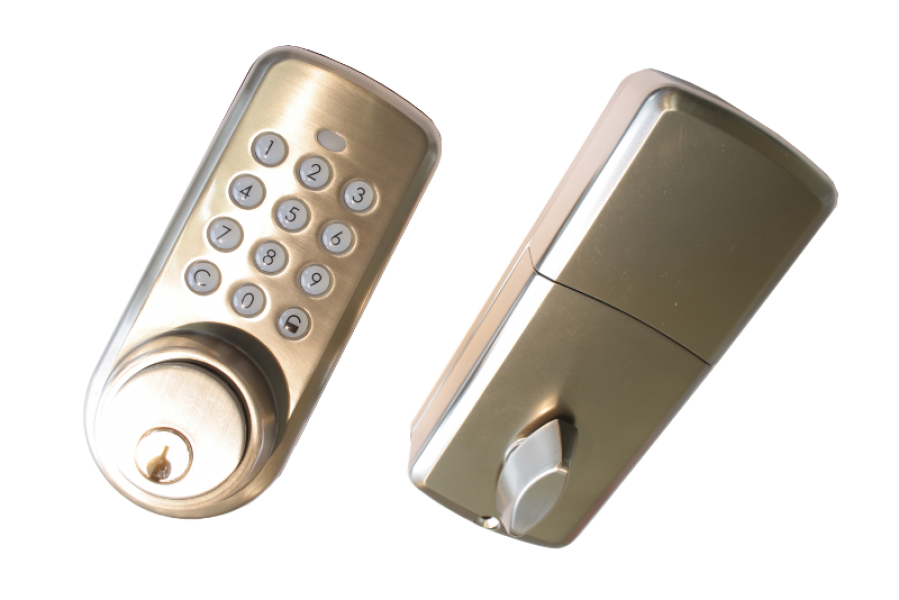

VIS_ZM1701
Firmware Version : 3.15 |
 |
Kurzinfo
A Dieses Gerät ist ein Z-Wave-Aktor. Zur Bestätigung der Inklusion oder Exklusion bitte die folgende Tastensequenz (hintereinander) eingeben: 'C' + '8' + '8' + '8' gefolgt von einer einfachen Betätigung (Drehen) des Dreh-Knaufes auf der Innenseite. Der Erfolg wird durch einen längeren Ton bestätigt.
Weitergehende Informationen finden sich in den jeweiligen Abschnitten dieses Handbuches.
Was ist Z-Wave?
Dieses Produkt entspricht dem Z-Wave-Standard. Z-Wave ist der internationale Funkstandard zur Kommunikation von Geräten im intelligenten Haus. Z-Wave-Geräte funken in Europa auf der Frequenz von 868.42 MHz.Z-Wave ermöglicht eine sichere und stabile Kommunikation indem jede Nachricht vom Empfänger rückbestätigt wird (Zweiwege-Kommunikation) und alle netzbetriebenen Geräte Nachrichten weiterleiten (Routing) können, wenn eine direkte Funkbeziehung zwischen Sender und Empfänger gestört ist.
Dank Z-Wave können Produkte unterschiedlicher Hersteller miteinander in einem Funknetz verwendet werden. Damit ist auch dieses Produkt mit beliebigen anderen Produkten anderer Hersteller in einem gemeinsamen Z-Wave Funknetz einsetzbar.
Z-Wave unterscheidet zwischen Controllern und Slaves. Slaves sind entweder Sensoren S, die Daten ermitteln oder Aktoren A, die Aktionen ausführen (Sensoren und Aktoren sind mitunter in einem Gerät vereint). Controller sind entweder statische netzgespeiste Controller C (auch IP-Gateways genannt) oder mobile batteriebetriebene Controller (Fernbedienungen, Batteriewandschalter)R. Damit ergeben sich eine Reihe prinzipieller Kommunikationsmöglichkeiten in einem Z-Wave-Netz:

- Controller steuern Aktoren.
- Aktoren melden Änderungen ihres Schaltzustandes
- Sensoren melden Messwerte oder Statusänderungen an Controller
- Sensoren steuern Aktoren direkt bei Ereignissen
- Aktoren steuern andere Aktoren
- Fernbedienungen erzeugen Ereignisse in einem statischen Controller, die zum Beispiel zum Steuern von Szenen genutzt werden
- Fernbedienungen steuern Aktoren
Controller können in einem Z-Wave Netzwerk zwei unterschiedliche Rollen einnehmen. Es gibt immer genau einen Primärcontroller der das Netzwerk steuert und Geräte in das Netzwerk inkludiert oder aus dem Netzwerk exkludiert. Dieser Controller kann weiter Nutzerfunktionen - zum Beispiel Tasten - besitzen. Alle anderen Controller mit Nutzerfunktionen erfüllen keine Managementaufgaben. Sie heißen Sekundärcontroller. Trotzdem verfügen sie - sozusagen als Backup - über alle notwendigen Informationen über das Netz. Das Übersichtsbild zeigt, das - batteriegestützt - Sensoren nicht direkt mit - batteriebetriebenen - Fernbedienungen kommunizieren. Sie senden nur Daten an statische Controller oder steuern Aktoren direkt.
Produktbeschreibung
Das ZM 1701 ist ein Z-Wave gesteuertes Türschloss. Das Türschloss kann für Türen mit einer Dicke von 38 mm und höher verwendet werden. Das Schloss ist mit einem einfachen Riegel-System ausgestattet und kann keine neuen Schlösser mit 3-Riegel-System ersetzen. Die Tür kann innen mit dem Dreh-Knaup und außen mit dem Zahlenschloss ver- und entriegelt werden. Das kabellose Kontrollsystem ermöglicht das Ver- und Entriegeln, Setzen und Ersetzen von bis zu 15 verschiedenen Zahlenkodes (4 bis 8 Ziffern) und eine Begrenzung der Gültigkeitsdauer bestimmter Zahlenkodes.
Lieferumfang:
- innere Blende mit Dreh-Knauf
- äußere Blende mit Zahlenschloss
- innerer Schließmechanismus
- Zylinder mit 3 Schlüsseln
Batterien
Dieses Gerät wird mit Batterien betrieben. Nur Batterien des angegebenen Typs verwenden. Niemals alte und neue Batterien im gleichen Gerät vermischen. Gebrauchte Batterien enthalten gefährliche Stoffe und dürfen nicht mit dem Hausmüll entsorgt werden!
Batterietyp: 4 * AA
Installationsanleitung
Das Vision Z-Wave Türschloss wird an ihrer Tür innerhalb von Gebäuden installiert und ersetzt das normale Türschloss inklusive des Schließmechanismus und des Zylinders.
Installieren Sie das Türschloss gemäß der unter folgenden Link erreichbaren Anleitung.
Verhalten des Gerätes im Z-Wave Netz
I Im Auslieferungszustand ist das Gerät mit keinem Z-Wave-Netz verbunden. Damit es mit anderen Z-Wave Geräten kommunizieren kann, muss es in ein bestehendes Z-Wave Netz eingebunden werden. Dieser Prozess wird bei Z-Wave Inklusion genannt. Geräte können Netzwerke auch wieder verlassen. Dieser Prozess heißt bei Z-Wave Exklusion. Beide Prozesse werden von einem Controller gestartet, der dazu in einen Inklusion- bzw. Exklusion-Modus geschaltet werden muss. Das Handbuch des Controllers enthält Informationen, wie er in diese Modi zu schalten ist. Erst wenn der Controller des Z-Wave Netzes im Inclusion-Modus ist, können Geräte hinzugefügt werden. Das Verlassen des Netzes durch Exklusion führt zum Rücksetzen dieses Gerätes in den Auslieferungszustand.
Zur Bestätigung der Inklusion oder Exklusion bitte die folgende Tastensequenz (hintereinander) eingeben: 'C' + '8' + '8' + '8' gefolgt von einer einfachen Betätigung (Drehen) des Drehgriffes auf der Innenseite. Der Erfolg wird durch einen längeren Ton bestätigt.
Bedienung des Gerätes
- Um die Tür zu öffnen, bitte Taste 'C' drücken und danach einen gültigen Benutzercode eingeben. Ein gültiger Code wird durch einen kurzen Ton und eine grüne LED, ein ungültiger Code durch einen Ton und eine rote LED angezeigt.
- Wird versehentlich eine falsche Zahl eingegeben, kann die Eingabe durch 'C' gelöscht werden und der Eingabevorgang beginnt von vorn.
- Das elektronische Türschloss unterstützt bis zu 13 Benutzercodes (inklusive des Mastercodes). Diese Codes können zwischen 4 und 10 Ziffern umfassen. Die Definition dieser Nutzercodes erfolgt ausschließlich über Z-Wave Funkkommandos.
- Das Gerät ermöglicht die Definition von bis zu 50 Zeitabschnitten mit entsprechenden Zugangsregeln. Die Definition dieser Zeitabschnitte erfolgt ausschließlich über Z-Wave Funkkommandos.
- Gültige Programmierung: langer Ton und grüne LED.
- Ungültige Programmierung: langer Ton und rote LED.
- Fehler: drei kurze Töne und rotes Blinken der LED.
- Batteriewarnung: Töne und rotes Blinken der LED für 5 Sekunden. Bitte ersetzen Sie die Batterien nur durch neue Alkaline-Batterien guter Qualität. Achtung: Wenn die Batterien komplett entladen waren, muss Jahr-Monat-Tag-Stunde-Minute wieder neu eingegeben werden.
Kommandoklassen
Unterstützte Kommandoklassen- Basic (Version 1)
- Battery (Version 1)
- Door Lock (Version 1)
- Version (Version 1)
- Manufacturer Specific (Version 1)
- Lock (Version 1)
- Security (Version 1)
- Lock (Version 1)
Technische Daten
| Batterietyp | 4 * AA |
| Explorer Frames | Ja |
| SDK | 4.51 |
| Geräteart | Slave with routing capabilities |
| Allgemeiner Z-Wave-Gerätetyp | Entry Control |
| Spezieller Z-Wave-Gerätetyp | Secure Keypad Door Lock |
| Router | Nein |
| FLiRS | Nein |
| Firmware Version | 3.15 |
Erläuterung Z-Wave-spezifischer Begriffe
- Controller... ist ein Z-Wave-Gerät mit erweiterten Fähigkeiten zur Verwaltung eines Netzes. Dies sind in der Regel Gateways oder Fernbedienungen. Batteriegespeiste Wandschalter können auch Controller sein.
- Slave... ist ein Z-Wave-Gerät mit erweiterten Fähigkeiten zur Verwaltung eines Netzes. Es gibt Sensoren, Aktoren und auch Fernbedienungen als Slaves.
- Primärcontroller (engl. Primary Controller)... ist der zentrale Netzverwalter des Z-Wave-Netzes.
- Inklusion (eng. Inclusion)... ist der Prozess des Einbindens eines neuen Gerätes ins Z-Wave-Netz.
- Exklusion (engl. Exclusion)... ist der Prozess des Entfernens eines Gerätes aus dem Z-Wave-Netz.
- Assoziation (engl. Association)... ist eine Steuerbeziehung zwischen einem steuernden und einem gesteuerten Gerät. Die Information dazu wird im steuernden Gerät in einer Assoziationsgruppe hinterlegt.
- Wakeup Notifikation (engl. Wakeup Notification) ... ist eine spezielle Funknachricht, mit der ein batteriegespeistes Gerät bekanntmacht, daß es im Aufwachstatus ist und Z-Wave-Nachrichten empfangen kann.
- Node Information Frame... ist eine spezielle Funknachricht, mit der ein Z-Wave-Gerät seine Geräteeigenschaften bekanntgibt.
Entsorgungshinweis
Dieses Gerät enthält Batterien. Bitte beachten Sie die gültigen Entsorgungsvorschriften für Batterien.
Das ist ein elektrisches Gerät. Es kann kostenfrei bei entsprechenden Annahmestellen abgegeben werden.